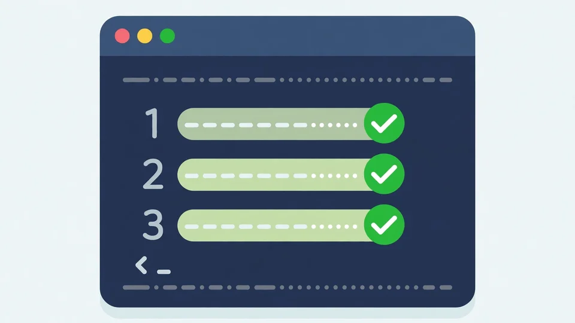

Stop your coding agent writing stale API code: a hands-on guide to stalemap
Your coding agent learned its libraries from training data that stopped months ago. When your project pins newer versions, it confidently writes code for the old API — and you find out from a failed build. stalemap closes that gap before the agent starts.
npx stalemap to preview, npx stalemap sync to write the notes, and npx stalemap check to keep them fresh in CI.- What: stalemap — notes, an edit-time guard, and a
search_changesMCP tool that tell a coding agent which dependencies changed after its training cutoff. - Project: Umair/stalemap, MIT license, created 2026-10-19 — 103 GitHub stars (verified 2026-10-25), latest release 0.4.1.
- Scope: JavaScript and TypeScript projects only, one
package.json; it checks direct dependencies your code imports, plus ones a config file configures. Default notes budget: 1,800 tokens. - Benchmark: a blind, pre-registered held-out test of 66 tasks from changes 33 popular npm packages released between July and October 2026: claude-sonnet-5-5 passed 89% of sessions with stalemap, against 68% alone and 73% with a plain
tsc --noEmithook. - Commands:
npx stalemap(preview),npx stalemap sync(write the notes),npx stalemap check(CI),npx stalemap guard src/**/*.ts(guard by hand). - Privacy: your source code is never uploaded — the import scan runs locally; only package names and versions go to the npm registry, GitHub and models.dev.
Every coding agent has a blind spot with a date on it. It learned your libraries from training data that ends at a cutoff, and your project keeps moving past it. The agent does not know it is out of date — it writes the old call with total confidence, and the failure shows up later, in your build or your review queue. stalemap, by Umair, names three examples in its README: maxSteps written against AI SDK 7, required_error against zod 4, and middleware.ts against Next 16. All three are code that looks right and is wrong for the version you pinned.
stalemap's answer is not a bigger model or a longer prompt. It is a short, ranked list of what actually changed, put where the agent cannot miss it: in the notes file it reads at the start of a session, in a guard that runs after every edit, and in a search tool it can ask in its own words. This guide runs it on a real project, end to end, in about fifteen minutes. You need no API key for the core flow — the notes come from type diffs and release notes, not from a model call.
What you'll need
- A JavaScript or TypeScript project with a
package.jsonand a lockfile (npm, pnpm, yarn or bun) — stalemap reads pinned versions fromnode_modulesor the lockfile - Node and npm, so you can run
npx - A coding agent: Claude Code, Cursor, Codex, OpenCode, or any MCP client
- Optionally, a GitHub token or a
ghlogin, which stalemap uses when available to fetch changelogs and releases
Set up stalemap in your project
1. Preview what changed
From your project root, run the preview. It prints what changed after your model's cutoff and the notes block it would write, without touching any file:
npx stalemap
How does it know your model's cutoff? It takes --model, or the model configured for Claude Code, Codex, OpenCode or Gemini CLI, or the $ANTHROPIC_MODEL environment variable. The cutoff itself comes from models.dev, with a built-in fallback table — or pass it yourself with --cutoff YYYY-MM-DD. One detail worth knowing: for each dependency, stalemap treats the newest stable release published at least 30 days before the cutoff as what the model knew. Anything newer than that is fair game for a note.
Read the preview before you trust it. In the README's own example, a Next.js plus AI SDK app on claude-sonnet-4-5 produced notes like this: CoreMessage was removed, use ModelMessage; streamText() options no longer accept maxTokens or maxSteps; NextMiddleware is deprecated in favour of NextProxy. If the preview is empty, that is a result too — it means nothing you import changed after the cutoff, and you have just saved yourself a round of stale edits.
2. Write the notes block
When the preview looks right, write it into your notes file:
npx stalemap sync
The block sits between <!-- stalemap:start --> and <!-- stalemap:end --> in AGENTS.md or CLAUDE.md, and text outside it is never touched. Claude Code reads CLAUDE.md, so if your notes live in AGENTS.md, add @AGENTS.md to CLAUDE.md or pass --target CLAUDE.md. Notes about what your project actually uses come first — imported APIs, members and props, config keys it sets, file names — inside a default budget of 1,800 tokens, which you can change with --budget.

3. Install the plugin, or set up your other agent
For Claude Code, install the plugin from inside the tool:
/plugin marketplace add Umair/stalemap
/plugin install stalemap@stalemap
The plugin adds three things: a SessionStart hook that puts the notes into context for the session's model (on startup, after /clear and after compaction, and it writes no files), a PostToolUse hook that runs the guard after each Write or Edit, and the stalemap MCP server plus two skills — /stalemap:sync writes the notes block, and upgrade tells Claude to look up a package's changes before using or upgrading it. The hooks and the MCP server run npx -y stalemap@latest, so they always use the latest npm release.
For Cursor, Codex or OpenCode, one command per agent writes the notes, registers the MCP server and installs the guard as a post-edit hook, as project files you can commit:
npx stalemap setup --agent cursor
Add --dry-run to print the changes without writing anything. One honest caveat from the README: this setup has not been tried in a real Cursor, Codex or OpenCode install yet, and Cursor does not pass a post-edit hook's context to the model yet, so setup adds a stop-hook fallback that sends unreported findings as a follow-up message.
4. Let the guard check your next edit
Now make an edit the way you normally would — ask your agent to touch a file that uses a changed dependency, or deliberately write an old call and watch what comes back. The guard runs the project's own tsc after the edit and reports, in this order: compile errors that come from a dependency that changed after the cutoff, with the matching note as the fix; things that still type-check but moved (a config key like Next 16's experimental.ppr, a moved member, or the renamed middleware.ts to proxy.ts convention); and then the compiler's other errors, which it does not claim are dependency changes. You can also run it by hand:
npx stalemap guard src/**/*.ts
This is the part a plain type-check hook cannot do. A plain tsc --noEmit hook tells the agent something failed; the guard tells it which change caused it and what the replacement is. In the benchmark below, that difference was worth 16 points.
5. Ask search_changes when the agent is unsure
Notes cover the common case; the search tool covers the long tail. From your agent, ask in plain words — the README's example is “resolve alias in next.config” — and the search_changes MCP tool returns the matching changes with their sources. The same search exists on the command line:
npx stalemap search "resolve alias in next.config"
Ranking is BM25 over words and split identifiers, weighted toward what your project uses, and the first search builds an index from the analysis caches so later searches are offline and fast. The MCP server also exposes package_changes, project_changes and check_notes. Use search when the agent is about to touch an API you have not seen a note for — that is exactly the moment a stale call slips in.
6. Keep the block fresh in CI
Notes rot the moment a dependency moves. Add a check that fails when the block is missing or stale:
npx stalemap check
Or use the GitHub Action, which fails CI when the notes are missing or stale for the model you name:
- uses: Umair/stalemap@main
with:
model: claude-opus-5-5
There is also a comment mode that lists each changed dependency on pull requests that change dependencies; it needs pull-requests: write permission. Re-run sync whenever you upgrade a dependency, and treat a failing check as a prompt to re-sync, not as noise to silence.
What you built
A project that tells its own agent what it does not know. Before a session starts, the agent reads a short, ranked list of the dependency changes that postdate its cutoff. After every edit, the guard checks the result against the project's own type-checker and hands back the matching note when a stale API is the cause. And when the agent is unsure about an API, it can search the changes instead of guessing from training data. None of this required an API key, and none of your source code left the machine to produce it.
Honest limitations
stalemap is early and maintained by one person, and the README says so plainly. It works for JavaScript and TypeScript only, with a single package.json — no workspace traversal yet. Packages without bundled types get release-note notes only, because @types/* packages are not diffed. Usage tracking stops at imported names and x.member accesses, so longer instance chains are not traced. Behaviour changes that never reach a type signature only surface if a release note or an upgrade guide names them.
The benchmark deserves the same honesty. It is blind and pre-registered, but it has one author behind the tool, the harness and the protocols (a separate session wrote the tasks and an independent reviewer checked them), and it measured two Claude models only — other agents and models were not measured. Even with stalemap, agents sometimes ignore correct notes. Treat the 89% figure below as evidence for Claude Code on JavaScript and TypeScript, not as a promise for every setup.
Frequently asked questions
Does stalemap upload my source code?
No. The import scan runs locally and your source code is never uploaded. Package names and versions go to the npm registry, GitHub and models.dev. Only if you use --llm, --examples or --guides do type diffs, release-note excerpts, guide text and the names of APIs you import go to Claude — your code is not included.
What if stalemap does not know my model's cutoff?
Pass it yourself. Use --model to name the model, or --cutoff YYYY-MM-DD to set the cutoff date directly. Otherwise stalemap reads the model configured for Claude Code, Codex, OpenCode or Gemini CLI, or the $ANTHROPIC_MODEL variable, and takes the cutoff from models.dev with a built-in fallback table.
Does it work without Claude Code?
Yes. Cursor, Codex and OpenCode get the same notes, MCP server and guard through stalemap setup --agent, and any MCP client can add the server with npx -y stalemap@latest mcp. The README notes the non-Claude-Code setup has not been tried in a real install yet, so expect rough edges there.